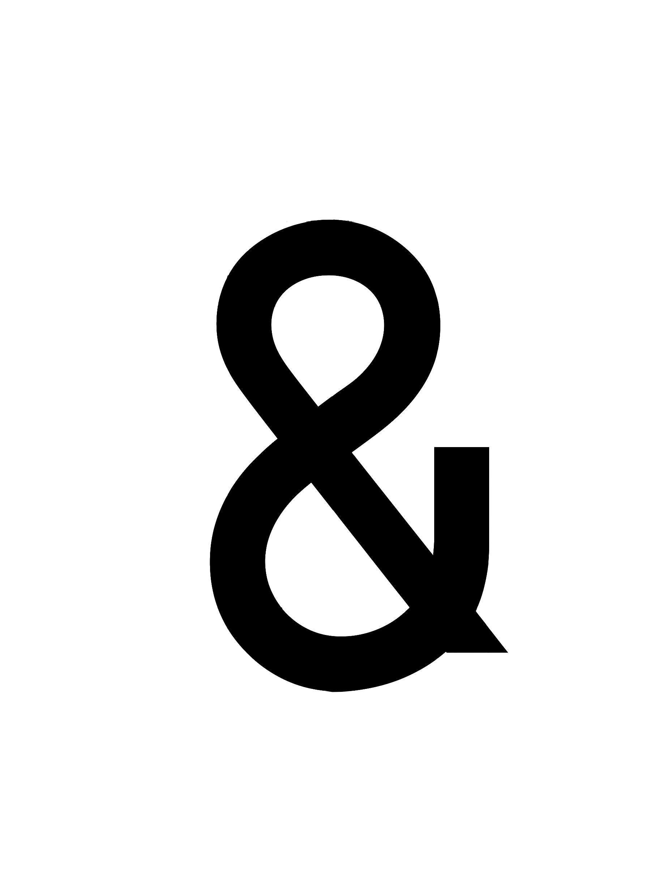

01 / 06
|
COMMERCIAL PRACTICE
项目名称
CLICK TO EXPLORE DETAILS ➔
01. 心湖之境：荒岛改造全时段滨水微度假空间

不止建筑AMPERSAND Studio（&）立足于“建筑学理性”与“艺术设计感性”的交汇点，事务所致力于打破学科边界，将建筑的结构秩序融入室内叙事，以双向视角介入城市更新、既有建筑改造及商业空间设计。
在“不止”的场域里，设计从未是孤立的动作，工作室的核心优势在于对多重尺度关系的统合与重构。我们关注的不仅是建筑或室内本体的营造，而是通过跨界方法处理空间、结构、使用者与场所之间的系统性关系。